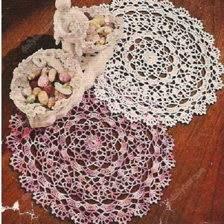

The Shaded Pink and Lavender Doily Pattern
MATERIALS:
This doily can be made with the following: The Famous "PURITAN" CROCHET COTTON, Article 40 or "DE LUXE" Quality CROCHET COTTON, Article 346 1 ball Tinted Pink and Lavender or color desired.
Steel crochet hook No. 7
1st Round: Ch 8, join to form a ring, ch 3 and work 23 dc in ring, join in 3rd st of ch.
2nd Round: Ch 4, dc in next dc, * ch 3, dc in next dc, ch 1, dc in next dc, repeat from * all around, ch 3, join in 3rd st of ch.
3rd Round: Sl st to center of next ch 3 loop, ch 9, dc in next ch 3 loop, * ch 6, dc in next ch 3 loop, repeat from * 9 times, ch 3, dc in 3rd st of ch 9 (this brings thread in position for next round).
4th Round: Ch 3, trc in next loop, * ch 8, trc in same loop keeping last loop of st just made on hook, trc in next loop keeping last loop of st on hook, thread over and work off all loops at one time (trc cluster), repeat from 10 times, ch 8, join in trc.
5th Round: Ch 7, trc in same space, * ch 3, sc in next loop, ch 3, 2 trc with ch 3 between in next trc cluster, repeat from * 10 times, ch 3, sc in next loop, ch 3, join in 4th st of ch 7.
6th Round: Sl st in loop, sc in same space, * ch 11, skip 2 loops, sc in next loop, repeat from * all around ending with ch 11, skip 2 loops, join in 1st sc.
7th Round: Sl st to 2nd st of next loop, ch 5, 8 trc with ch 1 between each trc in same loop, * 9 trc with ch 1 between each trc in next loop, repeat from * 10 times, join in 4th st of ch.
8th Round: Sl st in next trc, sc in next trc,* ch 7, skip 3 trc, sc in next trc, ch 7, skip 4 trc, sc in next trc, repeat from * 10 times, ch 7, skip 3 trc, sc in next trc, ch 3, trc in 1st sc.
9th Round: Ch 5, 4 trc with ch 1 between each trc in trc, * ch 7, sc in next loop, ch 7, 5 trc with ch between each trc in center st of next loop, repeat from * all around ending with ch 7, sc in next loop, ch 3, trc in 4th st of ch.
10th Round: * Ch 7, sc in center trc of next trc group, ch 7, sc in next loop, ch 7, sc in next loop, repeat from * 10 times, ch 7, sc in center trc of next trc group, ch 7, sc in next loop, ch 3, trc in trc.
11th Round: Ch 5, 4 trc with ch 1 between each trc in same space, ch 3, sc in next loop, * ch 3, 3 trc with ch 1 between each trc in next sc, ch 3, sc in next loop, ch 3, 5 trc with ch 1 between each trc in center st of next loop, ch 3, sc in next loop, repeat from * all around, ending to correspond, join in 4th st of ch.
12th Round: Sl st to center trc, ch 7, trc in same space, ch 3, work a trc cluster in next 2 loops, ch 3, 2 trc with ch 3 between in center trc of next trc group, repeat from * all around ending to correspond, join in 4th st of ch.
13th Round: Sl st into loop, sc in same space, * ch 4, skip 1 loop, 2 trc with ch 3 between in next trc cluster, ch 4, skip 1 loop, sc in next loop, repeat from * all around ending to correspond, join in 1st sc.
14th Round: Sl st to next ch 3 loop, sc in same space, * ch 12, skip 2 loops, sc in next loop, repeat from * all around, ch 12, join in 1st sc.
15th Round: Work in same manner as 7th round but repeat from * 22 times.
16th Round: Same as 8th round but repeat from * 22 times.
17th Round: Ch 5, 4 trc with ch 1 between each trc in trc, * ch 5, sc in next loop, ch 5, 5 trc with ch 1 between each trc in center st of next loop, repeat from * all around ending to correspond, join in 4th st of 1st ch 5.
18th Round: Ch 6, sl st in 4th st from hook for picot, * ch 2, trc in next trc, ch 3, sl st in trc for picot, repeat from * twice, ch 2, dc in next trc, ch 3, sl st in dc for picot, ch 2, sc in next loop, ch 4, sl st in 4th st from hook for picot, ch 1, sc in next loop, ch 2, dc in next trc, ch 3, sl st in dc for picot, repeat from 1st * all around endingr to correspond, join, cut thread. Press.
HOME